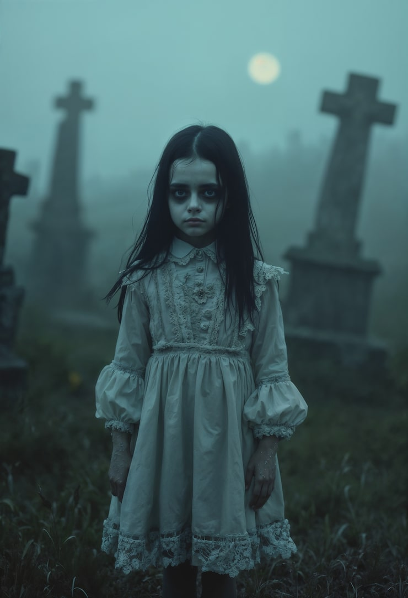

Echo im Glas
Eine Geistergeschichte
Es war im Spätherbst, als die Frau mit ihrem Korb den Gehweg entlangging und das kleine Mädchen in der Kutsche sah. Die Kutsche stand leer, doch aus dem Nebel drang eine Stimme, kaum lauter als der Atem des Windes. „Komm…“, flüsterte sie. Passanten sagten später, sie hätten das Mädchen weinen hören — dann sei Stille gewesen.
Menschen, die später in diesen Straßen spürten, wie etwas sie anlockte, fanden nur leere Schuhe auf der Schwelle, eine warme Spur im Schlamm und ein kleiner Fleck auf dem Glasfenster — der aussah, als wäre jemand letzte Tränen nachgelaufen.
Manche glauben, das Mädchen sammle Stimmen, andere, sie sei ein Echo verlorener Wünsche. Wer ihr folgt, so heißt es, hört zuerst die Namen seiner Kindheit und findet sich dann an einem Ort wieder, der nicht auf Karten verzeichnet ist.
© Midnight Chronicle — Vollversion für Unterstützer.